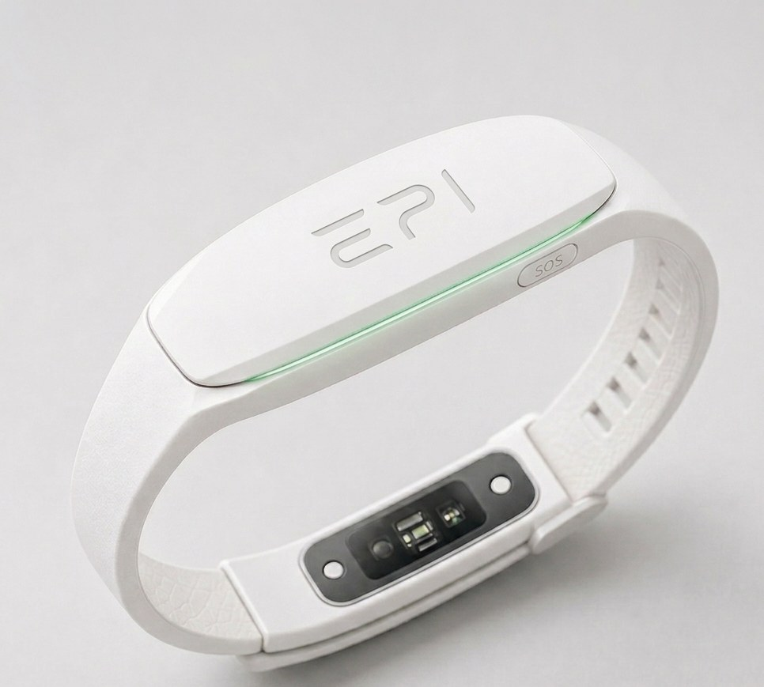

In the browser
Nothing to install. It runs on a desktop and on a phone, with a signal simulator in demo mode.
EPI is a wearable that combines motion sensing with heart-rate and blood-oxygen measurement to recognise a tonic-clonic seizure and alert the people close to the patient — together with an app that stores the trace of every event for a doctor to review.
Devices built around one sensor type confuse a seizure with vigorous movement. EPI analyses two channels in parallel: kinematic (accelerometer and gyroscope) and biometric (photoplethysmography — heart rate and SpO₂). An alarm needs confirmation from both at once, which is what keeps false alarms down.
The motion criterion is rhythmic shaking inside the band typical of a tonic-clonic seizure. The biometric criterion is a saturation drop, or a heart-rate rise abrupt enough that exercise cannot explain it.
Detection runs as a state machine. Every transition needs its condition met inside a time window — only the last one raises a notification.
Continuous low-power motion analysis, PPG in economy mode. The app keeps the resting heart-rate and saturation baseline up to date.
Shaking amplitude crosses the threshold and its frequency sits inside the seizure band. PPG switches to its full sampling rate.
A confirmation window counts down. The biometric criteria are checked and the wearer can cancel the alarm with the SOS button.
Criteria met: local alarm, notification to the contacts and a stored trace of the event with its timestamp.
Stopped by the wearer or rejected by data fusion. The event still lands in history as material for threshold calibration.

A prototype of the companion app, built from the system concept: a BLE service carries device state, heart rate, SpO₂ and battery level, and every event is stored locally together with the signal trace from 30 seconds before the seizure to 60 seconds after it.
IDLE state — the motion sensor wakes the PPG measurement.
Tonic-clonic seizure pattern detected
When the timer ends we notify Anna K. and Marek W., and store the event trace.
Tonic-clonic seizure1 min 42 s
Focal seizure38 s
Cancelled by user—
Beyond the mockup there is a working build: it runs the detection state machine in the browser, analyses the phone's accelerometer signal, stores events together with their signal trace and keeps a list of emergency contacts. It also pairs with a BLE heart-rate sensor and installs on a phone as an app.
Interface prototype — the data shown is illustrative. Detection thresholds require calibration on real data; the device is at engineering concept stage (TRL 2→3) and is not a medical device.
The same app runs in a browser, as an installed app on a phone, and as an Android APK. The data stays on the device — there is no server for anything to be sent to.
Nothing to install. It runs on a desktop and on a phone, with a signal simulator in demo mode.
Open the app in the phone's browser and choose "Add to home screen". It then starts full screen and works without a network.
Chrome: ⋮ menu → Add to home screen
Safari: Share → Add to Home Screen
A separate app that bundles everything offline — once installed it needs neither a network nor a server. The source lives in android/ and the file is built automatically from this repository.
All versions: github.com/Kajetan98/web/releases
Installing an APK from outside the Play Store requires the "Install unknown apps" permission for your browser or file manager. The APK build cannot connect to a BLE sensor — Android exposes Web Bluetooth only inside Chrome, so use the browser version for measurements from an external heart-rate sensor.
EPI is a research prototype at TRL 2→3. It is not a medical device, has not been clinically validated and must not be the only safeguard for a person with epilepsy. The detection thresholds require calibration on real data, ideally with a neurologist.
We are looking for centres and people who can help gather reference data for threshold calibration.
Get in touch ↗